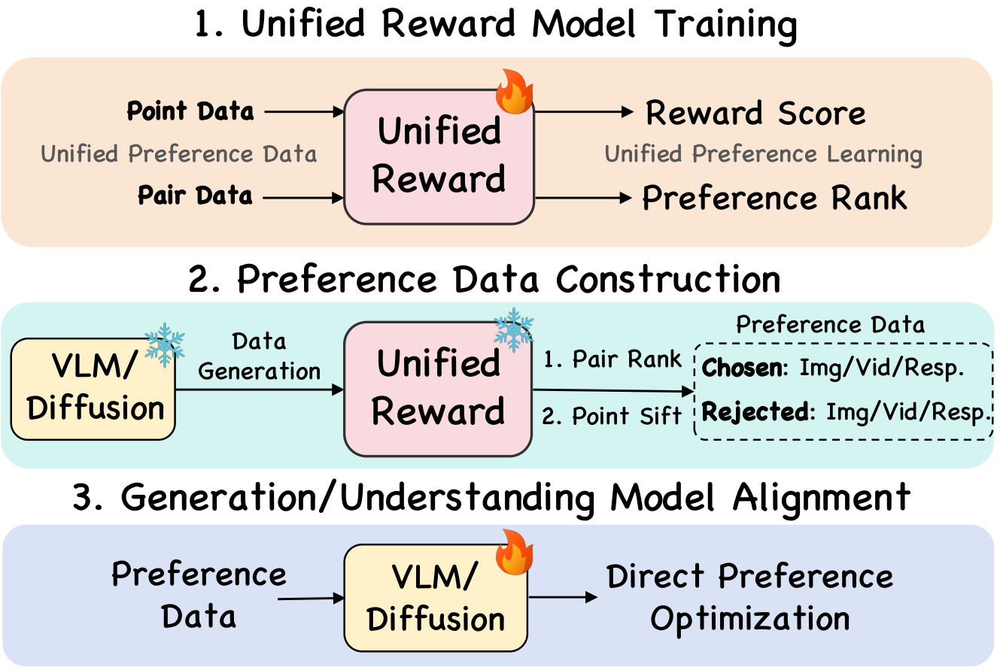
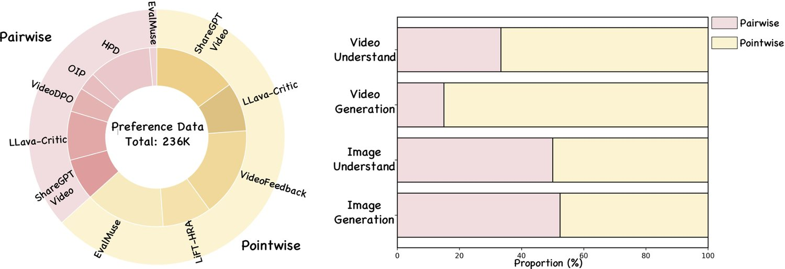
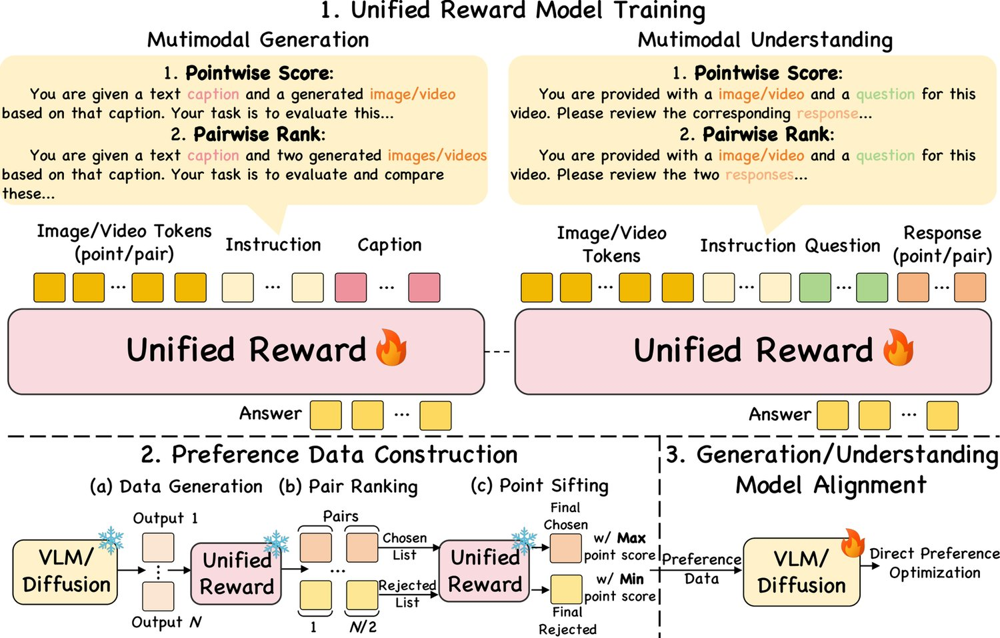
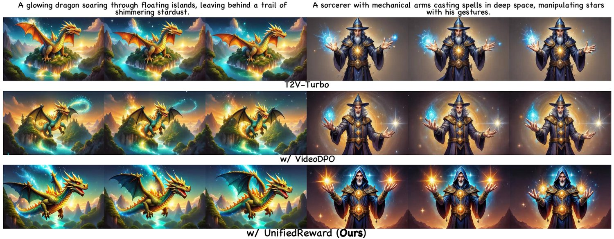
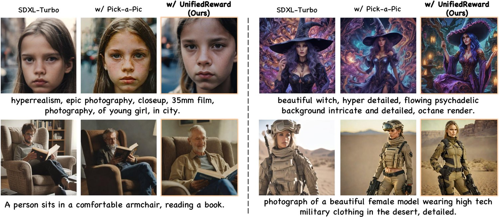
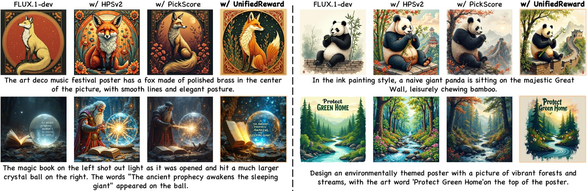
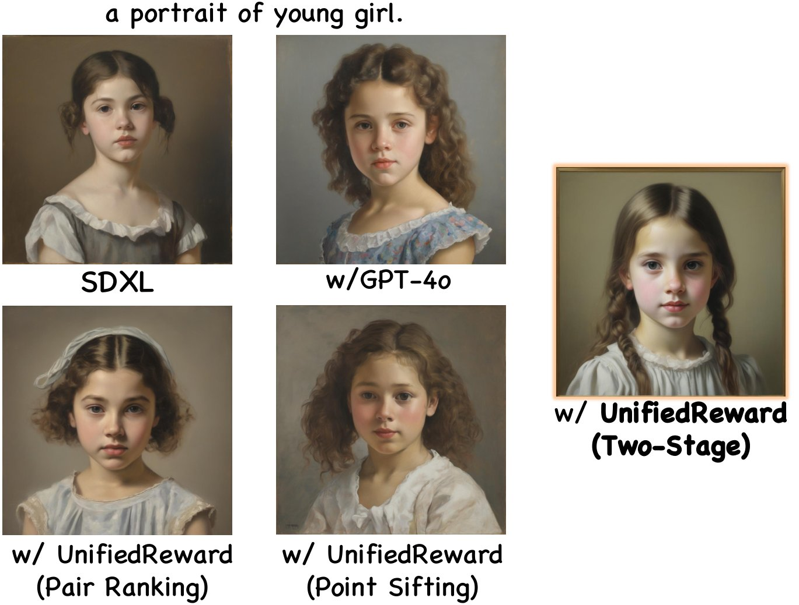
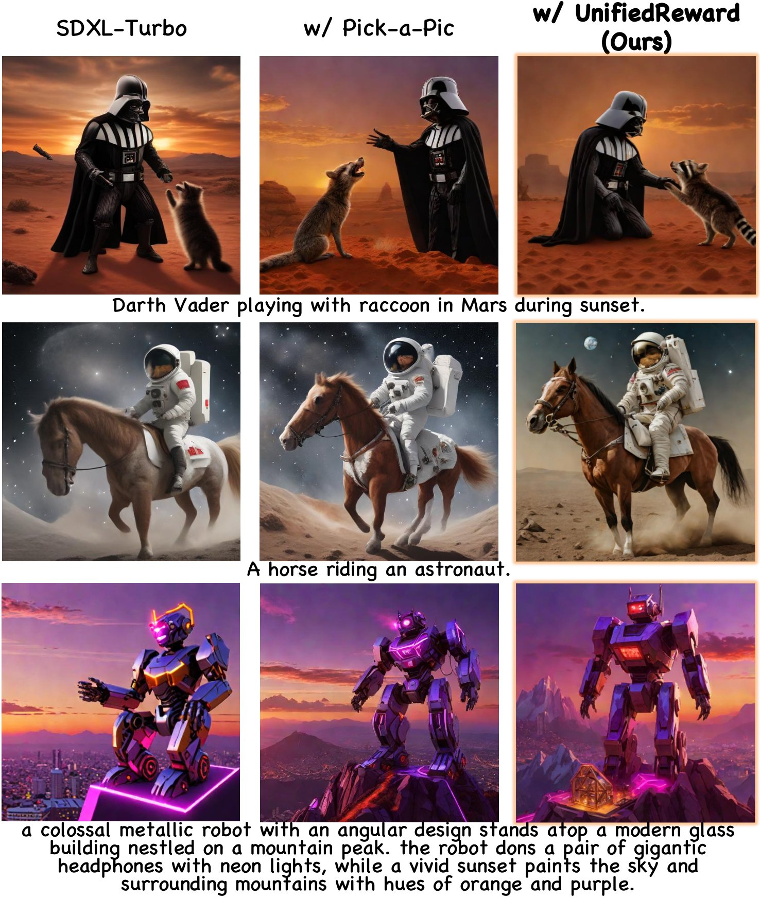
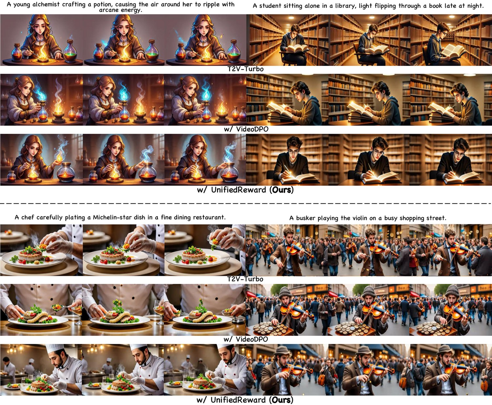

Unified Reward Model for Multimodal Understanding and Generation
Recent advances in human preference alignment have significantly improved multimodal generation and understanding. A key approach is to train reward models that provide supervision signals for preference optimization. However, existing reward models are often task-specific, limiting their adaptability across diverse visual applications. We also argue that a reward model that jointly learning to assess multiple vision tasks may foster a synergistic effect, where improved image understanding enhances image generation assessment, and refined image evaluation benefits video assessment through better frame analysis. To this end, this paper proposes UnifiedReward, the first unified reward model for multimodal understanding and generation assessment. It supports both pairwise ranking and pointwise scoring, providing effective reward signals for vision model preference alignment. Specifically, (1) we first train UnifiedReward on our constructed large-scale human preference dataset, which covers both image and video generation/understanding tasks. (2) Then, we leverage it to automatically construct high-quality pairwise preference data from vision models by progressively filtering their outputs through our two-stage strategy, i.e., pair ranking and point sifting. (3) Finally, we use these data to align vision models with human preferences via Direct Preference Optimization (DPO). Experimental results show that jointly learning to assess diverse visual tasks yields substantial mutual benefits. We further apply our pipeline to both vision understanding and generation, achieving consistent improvements across each domain.
Recent advancements in human preference alignment have substantially propelled the progress of multimodal generation and understanding tasks. A straightforward technique is to directly collect human feedback to construct preference datasets for model optimization [1, 2, 3]. Despite its effectiveness, collecting large-scale human feedback is time-consuming and resource-intensive. To this end, an alternative popular approach involves learning reward models [4, 5, 6, 7, 8, 9] from a limited amount of preference data and using the learned reward function to generate preference data based on the output of vision models. This synthetic preference data can then be leveraged for vision model preference alignment, significantly reducing the need for extensive human annotations.
近年来，人类偏好对齐的进展显著推动了多模态生成与理解任务的发展。一种直接的做法是采集人类反馈，构建偏好数据集用于模型优化[1, 2, 3]。该方法虽有效，但大规模人类反馈的采集既耗时又耗费资源。为此，另一类主流做法是从有限的偏好数据中学习奖励模型[4, 5, 6, 7, 8, 9]，再用学到的奖励函数基于视觉模型的输出生成偏好数据。这类合成偏好数据可用于视觉模型的偏好对齐，大幅降低对大规模人类标注的需求。

图 1：UnifiedReward 用于多模态理解与生成对齐的总体框架。流程包含三步：（1）统一奖励模型训练；（2）偏好数据构建；（3）生成/理解模型对齐。
Despite their progress, we posit two concerns: (1) current reward models are often tailored to specific tasks, as shown in Tab. I, limiting their adaptability across diverse visual understanding and generative tasks. The key challenge lies in the lack of a comprehensive human preference dataset that spans a wide range of visual tasks. (2) We intuitively argue that visual tasks are inherently interconnected, and jointly learning multiple visual tasks may create a mutually reinforcing effect. Specifically, enhanced image understanding may improve the evaluation of image generation by providing a more accurate assessment of content quality and contextual relevance. Similarly, improvements in image evaluation may benefit video evaluation, as high-quality image assessments lead to more accurate evaluations of video frames, contributing to overall better quality video assessment. This cross-task synergy facilitates a more robust evaluation of outputs across both image and video modalities in tasks involving understanding and generation. It inspires the development of a unified multimodal reward model that yields more precise reward signals for preference optimization.
尽管已有进展，我们认为仍存在两个问题：（1）现有奖励模型多针对特定任务设计（见表 I），难以适配多样化的视觉理解与生成任务，其关键症结在于缺少覆盖广泛视觉任务的综合性人类偏好数据集。（2）我们直观地认为，各类视觉任务本身相互关联，联合学习多个视觉任务可产生互相促进的效应。具体而言，图像理解能力的提升有助于更准确地评判内容质量与上下文相关性，从而改善图像生成的评价；同理，图像评价的改进也有利于视频评价，因为高质量的图像评判会带来更准确的视频帧评估，进而提升整体视频质量评估的水平。这种跨任务协同使图像与视频模态下理解与生成任务的输出都能得到更稳健的评估，也启发我们构建统一的多模态奖励模型，为偏好优化提供更精确的奖励信号。
To this end, we propose UnifiedReward, the first unified reward model for assessing multimodal understanding and generation, capable of both pairwise ranking and pointwise scoring, which can be utilized for preference alignment on diverse vision tasks.
为此，我们提出 UnifiedReward——首个面向多模态理解与生成评估的统一奖励模型，同时支持成对排序（pairwise ranking）与逐点打分（pointwise scoring），可用于多种视觉任务的偏好对齐。
表 I：本文奖励模型与近期方法的对比。UnifiedReward 能够同时评估图像与视频的理解与生成。“Pair”与“Point”分别表示“成对排序”与“逐点打分”。
| Reward Model | Method | Image Generation | Image Understand | Video Generation | Video Understand |
| PickScore’23 [10] | Point | ✓ | |||
| HPS’23 [11] | Point | ✓ | |||
| ImageReward’23 [11] | Point | ✓ | |||
| LLaVA-Critic’24 [5] | Pair/Point | ✓ | |||
| VideoScore’24 [4] | Point | ✓ | |||
| LiFT’24 [4] | Point | ✓ | |||
| VisionReward’24 [12] | Point | ✓ | ✓ | ||
| VideoReward’25 [7] | Point | ✓ | |||
| UnifiedReward | Pair/Point | ✓ | ✓ | ✓ | ✓ |
As illustrated in Fig. 1, our fine-tuning pipeline includes three key stages: (1) First, we construct a large-scale human preference dataset that spans both image and video generation/understanding tasks and develop UnifiedReward based on this dataset. (2) Next, we employ UnifiedReward to automatically construct high-quality preference pair data by selecting the outputs of specific baselines, such as Vision Language Models (VLM) and diffusion models, through multi-stage filtering, i.e., pair ranking and point sifting. (3) Finally, we use these preference pairs to align the outputs of these models with human preferences via direct preference optimization. Our experiments show that learning multiple visual tasks together yields significant reciprocal benefits, enhancing performance in each individual domain. By implementing our pipeline across both vision understanding and generation baselines, we observe notable improvements in each domain.
如图 1 所示，我们的微调流程包含三个关键阶段：（1）首先构建覆盖图像与视频生成/理解任务的大规模人类偏好数据集，并在此基础上训练 UnifiedReward。（2）随后用 UnifiedReward 对视觉语言模型（VLM）与扩散模型等基线的输出做多阶段筛选，即成对排序与逐点筛选，自动构建高质量的偏好对数据。（3）最后用这些偏好对通过直接偏好优化使模型输出与人类偏好对齐。实验表明，联合学习多个视觉任务可产生显著的互惠效应，各单项任务的性能均获提升。将该流程同时应用于视觉理解与生成两类基线模型后，我们观察到各领域性能都有明显改善。
Contributions: (1) We construct a large-scale human preference dataset that spans diverse vision tasks and develop UnifiedReward, the first unified reward model for assessing multimodal understanding and generation. (2) We propose a general pipeline for both vision understanding and generation model preference alignment, which remains an underexplored area in current research. Extensive experiments demonstrate its effectiveness in improving the performance of vision models in each domain. (3) Our experiments reveal that learning to assess image and video tasks jointly leads to a synergistic improvement in performance across different visual domains.
贡献如下：（1）构建覆盖多种视觉任务的大规模人类偏好数据集，并据此训练 UnifiedReward，这是首个面向多模态理解与生成评估的统一奖励模型。（2）提出一套同时适用于视觉理解与生成模型偏好对齐的通用流程，而这一问题在现有研究中尚缺乏探索；大量实验证明该流程能有效提升各领域视觉模型的性能。（3）实验表明，联合学习图像与视频任务的评估能力可在不同视觉领域产生协同增益。
Through this work, we aim to expand the scope of reward models, making them more adaptable, generalizable, and effective across various visual applications.
我们希望借此拓展奖励模型的适用范围，使其在各类视觉应用中更具适应性、泛化性与有效性。
Reward Models are crucial in aligning vision understanding and generation models with human preferences. Traditional methods [13, 14, 15] for evaluating vision quality and semantic consistency rely on metrics such as FID [16] and CLIP scores [17]. Despite their effectiveness, they are limited in their ability to capture human preferences. Therefore, recent studies [18, 19, 20] utilize human preference data to fine-tune CLIP, enabling them to better predict and align with human evaluations. With the advent of VLMs [21, 22], their robust ability to align visual and textual data makes them promising candidates for reward modeling. These models can be adapted into two main categories based on their capabilities: understanding assessment models [5, 6], which are designed exclusively for evaluating visual understanding tasks, and generation assessment models [4, 12, 7, 23], which focus on assessing visual synthesis quality.
奖励模型在使视觉理解与生成模型对齐人类偏好方面起着关键作用。传统方法[13, 14, 15]依赖 FID [16] 与 CLIP 分数[17]等指标评估视觉质量与语义一致性，虽有一定效果，却难以刻画人类偏好。因此，近期研究[18, 19, 20]利用人类偏好数据微调 CLIP，使其更好地预测并契合人类评价。随着视觉语言模型（VLM）[21, 22]的出现，其强大的视觉—文本对齐能力使其成为奖励建模的理想候选。按功能划分，这类模型可分为两类：理解评估模型[5, 6]，专门用于评价视觉理解任务；生成评估模型[4, 12, 7, 23]，侧重评价视觉合成质量。
However, these reward models are typically designed for specific tasks, as illustrated in Tab. I, restricting their ability to adapt to diverse visual understanding and generative tasks. In this work, we propose the first unified reward model for both image and video understanding and generation assessment, which is more adaptable, generalizable, and effective across various visual applications.
然而，这些奖励模型通常面向特定任务设计（见表 I），限制了其适配多样化视觉理解与生成任务的能力。本文提出首个同时面向图像与视频理解、生成评估的统一奖励模型，在各类视觉应用中更具适应性、泛化性与有效性。
Preference Learning for VLM/Diffusion is widely utilized to enhance their image and video understanding/generation performance. In video understanding, prior works have explored reinforcement learning with human feedback to refine reward models for factuality assessment [24], while [25, 9, 3] have used reinforcement learning on AI-generated feedback to enhance video LMMs. For image understanding, researchers investigate Direct Preference Optimization (DPO) as an alternative approach to preference modeling. [25, 26] apply DPO to refine rewards distilled from GPT-4V across different model outputs, while [27] constructs preference datasets by generating positive and negative sample pairs using ChatGPT, informed by detailed image descriptions. Similar methods have been applied to image generation [1, 8, 12] and video generation [2, 7, 4, 12, 28, 29, 30, 31], using reward models or human preference data to align pre-trained diffusion models.
偏好学习被广泛用于提升 VLM 与扩散模型在图像、视频理解/生成上的性能。在视频理解方面，已有工作探索用人类反馈强化学习改进用于事实性评估的奖励模型[24]；[25, 9, 3] 则利用 AI 生成反馈下的强化学习来增强视频大模态模型（LMM）。在图像理解方面，研究者将直接偏好优化（DPO）作为偏好建模的替代方案：[25, 26] 用 DPO 精炼从 GPT-4V 蒸馏出的、针对不同模型输出的奖励，[27] 则借助详细的图像描述，用 ChatGPT 生成正负样本对来构建偏好数据集。类似方法也被用于图像生成[1, 8, 12]与视频生成[2, 7, 4, 12, 28, 29, 30, 31]，通过奖励模型或人类偏好数据对齐预训练扩散模型。
However, these methods rely on task-specific reward models, and no unified reward model has been developed for preference learning across both image and video generation and understanding tasks. This limits the generalizability and efficiency of reward-based alignment. Our work investigates the effectiveness of joint learning to assess multiple visual tasks, demonstrating that cross-task synergy enhances the evaluation capabilities across each domain.
然而，这些方法依赖任务特定的奖励模型，尚无统一的奖励模型可用于图像与视频生成、理解全任务的偏好学习，限制了基于奖励的对齐方法的泛化性与效率。本文考察联合学习多视觉任务评估的有效性，证明跨任务协同可增强各领域的评估能力。
This work aims to develop a unified reward model for vision model preference alignment. Existing studies typically develop specialized reward models for specific tasks as shown in Tab. I, which restricts their adaptability across diverse visual applications. Furthermore, we intuitively argue that jointly learning multiple visual tasks can create a mutually reinforcing effect, yet this remains an underexplored area. To this end, this work proposes UnifiedReward, the first unified reward model for multimodal understanding and generation assessment, enabling both pair ranking and point scoring. It is then leveraged for aligning Vision-Language Models (VLMs) and Diffusion model alignment, enabling more robust and adaptable preference learning across diverse visual tasks.
本文旨在为视觉模型偏好对齐开发一个统一奖励模型。现有研究通常针对特定任务设计专用奖励模型（见表 I），限制了其在多样视觉应用中的适应性。此外，我们直观地认为联合学习多个视觉任务可产生互相促进的效应，而这一点尚少有人探索。为此，本文提出 UnifiedReward，首个面向多模态理解与生成评估的统一奖励模型，同时支持成对排序与逐点打分，并将其用于视觉语言模型（VLM）与扩散模型的对齐，使偏好学习在多样视觉任务中更稳健、更具适应性。

图 2：统计结果可视化。图中展示我们构建的统一偏好数据集的分布，以及各任务的成对与逐点分布。
Our pipeline is illustrated in Fig. 3. Specifically, we first construct a large-scale, unified preference dataset (Sec. III-B1) and train our UnifiedReward model on this dataset (Sec. III-B2). Then, we curate preference datasets for VLMs and diffusion models by applying pair ranking and point sifting on their outputs (Sec. III-C). These curated datasets are subsequently used for Direct Preference Optimization (DPO) (Sec. III-D), effectively aligning models with human preferences.
我们的流程如图 3 所示。首先构建大规模统一偏好数据集（第 III-B1 节），并在该数据集上训练 UnifiedReward（第 III-B2 节）；随后对 VLM 与扩散模型的输出施加成对排序与逐点筛选，为其整理出偏好数据集（第 III-C 节）；这些整理所得数据再用于直接偏好优化（DPO）（第 III-D 节），使模型有效对齐人类偏好。
A comprehensive human preference dataset that spans multiple vision-related tasks is essential for training a unified reward model. However, existing human feedback datasets, such as [4, 2, 5], are typically designed for specific tasks, limiting their generalizability. Currently, there is no human preference dataset that comprehensively covers both visual understanding and generation tasks, highlighting the need for a more versatile dataset. To bridge this gap, we integrate existing datasets and preprocess them to construct the first large-scale unified human preference dataset, which consists of approximately 236K data samples covering both image and video understanding and generation tasks. The detailed statistics and visualized distributions of the dataset are presented in Fig. 2 and Tab. II, respectively. We will elaborate on the data construction process for each task in the following.
训练统一奖励模型，离不开覆盖多种视觉相关任务的综合性人类偏好数据集。然而，已有的人类反馈数据集（如 [4, 2, 5]）通常针对特定任务构建，泛化性有限；目前尚无同时覆盖视觉理解与生成任务的人类偏好数据集，亟需更具通用性的数据。为此，我们整合现有数据集并加以预处理，构建了首个大规模统一人类偏好数据集，共约 236K 条样本，覆盖图像与视频的理解与生成任务。数据集的详细统计与可视化分布分别见图 2 与表 II。下面分任务说明数据的构建过程。

图 3：方法概览。（1）统一奖励模型训练：采用逐点打分与成对排序策略，训练一个同时面向多模态生成与理解评估的统一奖励模型。（2）偏好数据构建：用训练好的奖励模型通过三步构建高质量偏好数据：（a）由视觉模型生成数据；（b）成对排序以划分选中输出与拒绝输出；（c）逐点筛选以精炼选中与拒绝样本。（3）生成/理解模型对齐：用构建好的偏好数据，通过直接偏好优化（DPO）使视觉模型对齐人类偏好。
Image Generation. EvalMuse [32] consists of 4K prompts, each with multiple images generated by different models. Each image is evaluated by at least three annotators, who provide an overall score (1-5) and element-wise labels indicating whether specific elements are present. For pointwise score learning, we compute the final score as the average of all ratings. An element is considered generated if at least two annotators agree; otherwise, it is marked as not generated. We integrate the overall score and element-wise labels as assessment answers for reward model learning. For pairwise ranking, we select the images with the highest and lowest average score from the same prompt as a ranking pair. Human Preference Dataset (HPD) [33] contains 700K human preference votes. For each prompt, two images generated by different models are provided, each with its respective vote count. In our work, we directly use the vote counts to construct pairwise ranking data, ranking the image with more votes as the preferred one. Open-Image-Preferences (OIP) 11 1 https://huggingface.co/datasets/data-is-better-together/open-image-preferences-v1-binarized contains 7.4K text-to-image preference pairs, which are directly used in this work. Image Understanding. LLava-Critic-113K [5] consists of 40K pointwise score and 73K pairwise ranking data samples for image understanding assessment learning. From this dataset, we select 25K samples for each of pairwise ranking and pointwise scoring learning. Video Generation. VideoDPO [2] includes 10K synthesized video pairs for text-to-video model DPO. We directly use this dataset for our pairwise ranking learning in video generation. LiFT-HRA [4] and VideoFeedback [23] provide extensive human feedback for pointwise scoring of synthesized videos, which we directly incorporate into our work. Video Understanding. ShareGPTVideo-DPO [34] contains 17K video understanding DPO data, where each response in a pair is assigned an evaluation score. We directly use the pair data for pairwise ranking learning, while the individual response scores are extracted for pointwise scoring learning.
图像生成。EvalMuse [32] 包含 4K 条提示，每条提示对应多张由不同模型生成的图像。每张图像至少由三名标注者评分，给出整体分数（1-5）以及指示特定元素是否存在的元素级标签。对于逐点分数学习，我们将所有评分的均值作为最终分数；若至少两名标注者一致认定某元素已生成，则判定该元素已生成，否则标记为未生成。我们将整体分数与元素级标签整合为评估答案，供奖励模型学习。对于成对排序，我们从同一提示下选取平均分最高与最低的图像构成排序对。人类偏好数据集（HPD）[33] 包含 700K 条人类偏好投票，每条提示提供两张由不同模型生成的图像及各自的得票数。本文直接用得票数构建成对排序数据，得票多者为偏好图像。Open-Image-Preferences（OIP）11 1 https://huggingface.co/datasets/data-is-better-together/open-image-preferences-v1-binarized 包含 7.4K 组文生图偏好对，本文直接使用。图像理解。LLava-Critic-113K [5] 包含 40K 条逐点打分与 73K 条成对排序样本，用于图像理解评估学习。我们从该数据集中为成对排序与逐点打分各选取 25K 条样本。视频生成。VideoDPO [2] 包含 10K 组合成视频对，用于文生视频模型 DPO。我们直接用该数据集进行视频生成的成对排序学习。LiFT-HRA [4] 与 VideoFeedback [23] 提供了大量针对合成视频的逐点打分人类反馈，我们直接纳入使用。视频理解。ShareGPTVideo-DPO [34] 包含 17K 条视频理解 DPO 数据，其中每个回答对中的回答都带有评分。我们直接使用成对数据进行成对排序学习，并抽取各回答的独立分数用于逐点打分学习。
表 II：图像与视频生成/理解评估的训练数据集。“*”表示该数据集在本文中经过预处理。
| Task | Method | Dataset | Size | |
| Image | Generation | Pair | EvalMuse* | 3K |
| HPD* | 25.6K | |||
| OIP | 7.4K | |||
| Point | EvalMuse* | 32.7K | ||
| Understanding | Pair | LLaVA-Critic | 25K | |
| Point | LLaVA-Critic | 25K | ||
| Video | Generation | Pair | VideoDPO | 10K |
| Point | LiFT-HRA | 20K | ||
| VideoFeedback | 36.6K | |||
| Understanding | Pair | ShareGPTVideo | 17K | |
| Point | ShareGPTVideo* | 34K |
For pairwise ranking datasets, we standardize the answer format as “image/video/response X is better than image/video/response Y”, where “X” and “Y” represent the assigned indices. If the dataset includes evaluation justifications [5, 4], we retain them to allow the model to learn from human reasoning. For pointwise scoring, we do not enforce a unified response format or score range, allowing the model to learn from diverse rating styles and scoring systems across different datasets. To ensure alignment between evaluation criteria and responses, we adjust instruction prompts accordingly.
对于成对排序数据集，我们统一答案格式为“image/video/response X is better than image/video/response Y”，其中“X”与“Y”为指定的序号。若数据集包含评估理由[5, 4]，我们予以保留，使模型能够学习人类的推理过程。对于逐点打分，我们不强制统一的回答格式与分数区间，以便模型从不同数据集的多样评分风格与评分体系中学习。为保证评估标准与回答一致，我们相应调整了指令提示。
As shown in Fig. 2, the training data for video generation pairwise ranking assessment is relatively limited compared to other tasks, but we believe that the synergistic effect of multitask learning can alleviate this deficiency. Overall, our dataset provides a diverse and comprehensive collection of human preferences, covering both pairwise ranking and pointwise scoring across image and video understanding/generation tasks. This enables effective reward model training, ensuring robust performance across multimodal understanding and generation applications.
如图 2 所示，与其他任务相比，视频生成成对排序评估的训练数据相对有限，但我们认为多任务学习的协同效应可以缓解这一不足。总体而言，我们的数据集提供了多样而全面的人类偏好，覆盖图像与视频理解/生成任务的成对排序与逐点打分，能够支撑有效的奖励模型训练，确保在多模态理解与生成应用中表现稳健。
Based on the comprehensive datasets, we fine-tune a pre-trained VLM [35] with strong vision understanding capabilities to develop UnifiedReward, jointly training it across diverse vision tasks. Instead of learning evaluation from scratch, we integrate assessment ability as an additional discriminative skill, leveraging the model’s existing visual comprehension to enhance its evaluation performance across various tasks.
在上述综合数据集的基础上，我们对一个视觉理解能力较强的预训练 VLM [35] 进行微调，跨多种视觉任务联合训练，得到 UnifiedReward。我们并非从零学习评估能力，而是把评估作为一项额外的判别技能注入模型，借助其已有的视觉理解能力来提升各类任务上的评估表现。
Fig. 3 (top) illustrates our training process. Specifically, for multimodal generation evaluation, our model takes vision tokens, instruction input, and a caption as input. In contrast, for multimodal understanding, the caption is replaced by a question and the corresponding response(s), aligning the input format with the respective task requirements. The model is trained to predict the pointwise score or pairwise ranking based on the criteria specified in the instruction prompt. If the training data includes justifications, the model is also trained to generate detailed explanations to support its evaluations. During training, the optimization objective is standard cross-entropy loss, but it is computed only on the model’s predicted answer.
图 3（上）展示了训练过程。对于多模态生成评估，模型输入为视觉词元、指令输入与描述文本（caption）；对于多模态理解，描述文本被替换为问题及相应的回答，使输入格式与任务要求一致。模型按指令提示中给定的标准，预测逐点分数或成对排序结果。若训练数据包含评估理由，模型还需生成详细解释来支撑其评价。训练时的优化目标为标准交叉熵损失，但仅对模型预测的答案部分计算。
After training our UnifiedReward, we leverage it for preference alignment in multimodal understanding and generation models. This process consists of two sequential steps, i.e., Preference Data Construction and Generation/Understanding Model Alignment. The following sections provide a detailed explanation of each step.
训练得到 UnifiedReward 后，我们将其用于多模态理解与生成模型的偏好对齐。该过程依次包含偏好数据构建与生成/理解模型对齐两步，下面分节详述。
The quality of preference alignment data directly determines the effectiveness of model alignment. Existing methods [4, 7, 5] are often limited to a single evaluation strategy, either assigning pairwise rankings or pointwise scores to model outputs for preference data construction. In contrast, this work leverages both pairwise ranking and pointwise scoring capabilities of UnifiedReward, enabling a higher quality preference data construction pipeline, as illustrated in Fig. 3 (bottom left).
偏好对齐数据的质量直接决定模型对齐的效果。已有方法[4, 7, 5]往往只采用单一评估策略，即仅对模型输出做成对排序或仅做逐点打分来构建偏好数据。相比之下，本文同时利用 UnifiedReward 的成对排序与逐点打分能力，构建出质量更高的偏好数据流程，如图 3（左下）所示。
Specifically, our pipeline includes three sequential steps: (1) Data Generation. Given an image/video-question pair (or generation prompt), a VLM (or diffusion model) generates multiple candidate outputs . These outputs serve as the initial pool for followed preference data filtering. (2) Pair Ranking. Given N outputs, we group them into N/2 pairs and use our model to perform pairwise ranking for each pair. Then, we classify these ranked pairs into a chosen list and a rejected list . (3) Point Sifting. Finally, we apply our model to assign pointwise scores to all outputs in both the chosen list and the rejected list. The final preference data pair is determined as:
该流程依次包含三步：（1）数据生成。给定图像/视频—问题对（或生成提示），由 VLM（或扩散模型）生成多个候选输出 ，作为后续偏好数据筛选的初始候选池。（2）成对排序。给定 N 个输出，将其分为 N/2 对，用我们的模型逐对排序，再把排序后的结果归入选中列表 与拒绝列表 。（3）逐点筛选。最后用我们的模型为选中列表与拒绝列表中的所有输出打逐点分数。最终偏好数据对的确定方式为：
where represents the pointwise score assigned by our model, is the most preferred output and is the least preferred output.
其中 表示我们模型给出的逐点分数， 为最受偏好的输出， 为最不受偏好的输出。
By combining pairwise ranking and pointwise scoring, the final preference data could provide a high-quality and reliable preference signal, effectively capturing both relative comparisons and absolute quality assessments.
成对排序与逐点打分相结合，使最终偏好数据能够提供高质量、可靠的偏好信号，同时兼顾相对比较与绝对质量评估。
After constructing the preference data, we leverage it for multimodal generation and understanding model alignment using DPO, which enables models to align their outputs with human preferences without explicit reward modeling, optimizing directly based on ranked preference pairs.
构建好偏好数据后，我们用 DPO 将其用于多模态生成与理解模型的对齐：DPO 无需显式的奖励建模，可直接基于排序后的偏好对优化模型，使输出契合人类偏好。
DPO for Multimodal Generation. For multimodal generation tasks, diffusion [36] is widely used due to their strong capability in generating high-quality and diverse outputs across image and video synthesis. Therefore, we apply DPO on diffusion models to align their outputs with human preferences.
多模态生成的 DPO。由于扩散模型[36]在图像与视频合成中生成质量高、多样性好，多模态生成任务广泛采用扩散模型。因此，我们对扩散模型施加 DPO，使其输出对齐人类偏好。
Given the constructed preference pair dataset , where and represents the preferred generated sample and the less preferred sample respectively, M denotes the number of samples, we optimize the diffusion model by comparing the noise prediction differences between the fine-tuned model and pre-trained reference model [1]:
给定构建好的偏好对数据集 ，其中 与 分别表示受偏好的生成样本与较不受偏好的生成样本，M 表示样本数，我们通过比较微调模型与预训练参考模型[1]的噪声预测差异来优化扩散模型：
where and are the noisy latents derived from and at timestep , respectively. and denote the predicted noise from the fine-tuned and pre-trained reference diffusion models, respectively. is a temperature hyperparameter controlling optimization strength, is the logistic function, represents the signal-to-noise ratio, and is a weighting function, which is treated as a constant equal to in this work.
其中 与 分别是在时间步 由 与 得到的带噪潜变量； 与 分别表示微调后与预训练参考扩散模型预测的噪声； 为控制优化强度的温度超参数； 为 logistic 函数； 表示信噪比； 为加权函数，本文中视为常数 。
This loss encourages the fine-tuned diffusion model to reduce the denoising error for preferred samples while increasing it for less preferred ones, thereby improving the generation quality.
该损失促使微调后的扩散模型降低偏好样本的去噪误差、提高非偏好样本的去噪误差，从而改善生成质量。
DPO for Multimodal Understanding. Similar to generation alignment, we apply DPO to adjust the model’s response preference for multimodal understanding models, i.e., VLMs. Given an input (e.g., an image/video-question pair) with a preferred response and a less preferred response from preference pair dataset , the optimization is formulated as:
多模态理解的 DPO。与生成对齐类似，我们对多模态理解模型（即 VLM）施加 DPO，以调整其回答偏好。给定输入 （如图像/视频—问题对）以及来自偏好对数据集 的偏好回答 与较不受偏好的回答 ，优化目标为：
where and are the response probability under the fine-tuned model and reference model, respectively. is a hyperparameter that controls optimization sensitivity.
其中 与 分别是回答在微调模型与参考模型下的概率， 为控制优化敏感度的超参数。
This loss encourages the VLM to increase the likelihood of generating preferred responses while decreasing it for less preferred ones, thereby improving the model’s alignment with human preferences and enhancing reasoning quality.
该损失促使 VLM 提高生成偏好回答的概率、降低生成非偏好回答的概率，从而增强模型与人类偏好的一致性，并提升推理质量。
表 III：图像理解评估。我们在 VLRewardBench 上评估各个方面。
| Models | General | Hallu. | Reason. | Overall Accuracy | Macro Accuracy |
| Gemini-1.5-Pro | 50.8 | 72.5 | 64.2 | 67.2 | 62.5 |
| GPT-4o | 49.1 | 67.6 | 70.5 | 65.8 | 62.4 |
| LLaVA-Critic | 47.4 | 38.5 | 53.8 | 46.9 | 46.6 |
| OV-7B | 32.2 | 20.1 | 57.1 | 29.6 | 36.5 |
| w/ Img. Und. | 47.6 | 38.3 | 54.5 | 47.4 | 46.8 |
| w/ Img. Und.+Gen. | 49.8 | 52.6 | 58.1 | 50.4 | 53.5 |
| w/ Img.+Vid. Und | 52.4 | 55.6 | 57.2 | 52.7 | 55.1 |
| UnifiedReward | 60.6 | 78.4 | 60.5 | 66.1 | 66.5 |
Reward Model. We adopt the pre-trained LLaVA-OneVision 7B (OV-7B) [35] as the base architecture for UnifiedReward. Training is conducted on 8 H100 GPUs with a batch size of 2, gradient accumulation steps of 16, a learning rate of , and a warm-up ratio of . Inference remains efficient: 1s for direct answers and 3s with brief rationales, with no additional overhead compared to the base model. We additionally train UnifiedReward on Qwen2.5-VL [37] to verify the robustness of UnifiedReward across different baselines.
奖励模型。我们采用预训练的 LLaVA-OneVision 7B（OV-7B）[35] 作为 UnifiedReward 的基础架构。训练在 8 张 H100 GPU 上进行，批大小为 2，梯度累积步数为 16，学习率为 ，预热比例为 。推理依然高效：直接作答约 1 秒，附带简要理由约 3 秒，相比基础模型没有额外开销。我们还在 Qwen2.5-VL [37] 上训练 UnifiedReward，以验证其在不同基线上的鲁棒性。
Multimodal Understanding DPO. Based on UnifiedReward, we apply DPO to LLaVA-OneVision 7B [35] and LLaVA-Video [38] to enhance their performance in image and video understanding, respectively. We use a batch size of 1, gradient accumulation steps of 16, a learning rate of , and set .
多模态理解 DPO。基于 UnifiedReward，我们分别对 LLaVA-OneVision 7B [35] 与 LLaVA-Video [38] 施加 DPO，以提升其图像理解与视频理解性能。批大小为 1，梯度累积步数为 16，学习率为 ，并设 。
Multimodal Generation DPO. For image and video generation DPO, we use SDXL-Turbo [39] and T2V-Turbo [29], respectively. The parameter is set to 5000, with batch sizes of 32 for SDXL-Turbo and 16 for T2V-Turbo. We construct 10K preference data for video generation DPO and 14k for other DPO tasks. The number of candidate outputs N is set to 10. All models are trained for 3 epochs.
多模态生成 DPO。图像与视频生成 DPO 分别采用 SDXL-Turbo [39] 与 T2V-Turbo [29]。参数 设为 5000，SDXL-Turbo 与 T2V-Turbo 的批大小分别为 32 与 16。我们为视频生成 DPO 构建 10K 条偏好数据，其他 DPO 任务为 14k 条。候选输出数量 N 设为 10。所有模型训练 3 个轮次。

图 4：T2V-Turbo 上的 DPO 定性对比。我们比较原始 T2V-Turbo、用 VideoDPO 训练的 DPO 与用 UnifiedReward 训练的 DPO 的定性表现。
Evaluations. Multimodal Understanding: We evaluate the image and video understanding assessment of UnifiedReward on VLRewardBench [40] and ShareGPTVideo [34] (1K samples for testing), respectively. Multimodal Generation: GenAI-Bench [41] includes both image and video generation reward benchmarks, which are utilized. Besides, we also employ VideoGen-RewardBench [7] as the video generation assessment benchmark. DPO: For image understanding, LLaVABench [42], WildVision [43], LLaVABench-Wilder [44], LiveBench [45], MMHal [46], MMBench [47], MME [48], MathVista [49], DocVQA [50], and TextVQA [51] are employed. We use LMMs-Eval [52] toolkit to evaluate. For video understanding, we employ “gpt-3.5-turbo-1106” for MSRVTT [53], MSVD [54], TGIF [55] evaluation, while using the VLMEvalKit [56] toolkit for evaluate LongVideoBench [57], MLVU [58] and VideoMME [59] evaluation. For image generation evaluation, we generate images conditioned on captions from the Partiprompt [60] and HPSv2 [11] benchmarks (1632 and 3200 captions respectively) and utilize the image reward models, i.e., PickScore [10], HPSv2 [11] and ImageReward [18] for quality assessment. VBench [15] is used for video generation assessment.
评测设置。多模态理解：我们分别在 VLRewardBench [40] 与 ShareGPTVideo [34]（取 1K 条样本测试）上评估 UnifiedReward 的图像理解与视频理解评估能力。多模态生成：采用同时包含图像与视频生成奖励基准的 GenAI-Bench [41]；此外还使用 VideoGen-RewardBench [7] 作为视频生成评估基准。DPO：图像理解方面采用 LLaVABench [42]、WildVision [43]、LLaVABench-Wilder [44]、LiveBench [45]、MMHal [46]、MMBench [47]、MME [48]、MathVista [49]、DocVQA [50] 与 TextVQA [51]，并使用 LMMs-Eval [52] 工具包评测。视频理解方面，MSRVTT [53]、MSVD [54]、TGIF [55] 使用“gpt-3.5-turbo-1106”评测，LongVideoBench [57]、MLVU [58] 与 VideoMME [59] 则使用 VLMEvalKit [56] 工具包评测。图像生成方面，我们基于 Partiprompt [60] 与 HPSv2 [11] 基准的描述文本（分别为 1632 与 3200 条）生成图像，并用图像奖励模型 PickScore [10]、HPSv2 [11] 与 ImageReward [18] 评估质量。视频生成评估使用 VBench [15]。

图 5：SDXL-Turbo 上的 DPO 定性对比。我们比较原始 SDXL-Turbo、在 Pick-a-Pic 数据集上训练的 DPO 与用 UnifiedReward 训练的 DPO 的定性表现。
Image Understanding. We compare our method with LLaVA-Critic [5], as well as two closed-source models [61, 62]. The experimental results, shown in Tab. III, indicate that our method outperforms baselines in most metrics, e.g., macro accuracy, which demonstrates the superiority of our method in image understanding assessment. For Video Understanding, we explore the effectiveness of multi-task learning in video understanding assessment on ShareGPTVideo, which will be analyzed in Sec. IV-D. In Image Generation assessment, we compare our method with both traditional and state-of-the-art approaches [10, 11, 18, 12]. The results are presented in Tab. IV. Notably, the latest work, VisionReward, supports reward modeling for both image and video generation. However, it trains separate models for each task using their respective datasets, whereas our approach jointly learns multiple tasks within a unified framework, leading to relatively better performance. For Video Generation, we compare our method with the latest approaches [23, 4, 12, 2]. As shown in Fig. 2, our training data for video generation assessment is relatively limited. However, as demonstrated in Tab. IV, our method excels across all metrics when compared to all baselines, highlighting that multitask learning not only mitigates the issue of insufficient training data but also enhances the learning effectiveness for video generation assessment.
图像理解。我们将本方法与 LLaVA-Critic [5] 以及两个闭源模型[61, 62]对比。表 III 的结果显示，本方法在多数指标（如宏准确率）上优于基线，体现了其在图像理解评估上的优势。视频理解：我们在 ShareGPTVideo 上考察多任务学习对视频理解评估的作用，将在第 IV-D 节分析。图像生成评估：我们同时与传统方法和当前最优方法[10, 11, 18, 12]对比，结果见表 IV。值得注意的是，最新的 VisionReward 虽支持图像与视频生成的奖励建模，却需针对每个任务用各自的数据集训练独立模型；而我们的方法在统一框架内联合学习多个任务，性能相对更优。视频生成：我们与最新方法[23, 4, 12, 2]对比。如图 2 所示，我们用于视频生成评估的训练数据相对有限，但表 IV 显示，本方法在所有指标上都优于全部基线，说明多任务学习不仅缓解了训练数据不足的问题，也提升了视频生成评估的学习效果。
表 IV：图像与视频生成对比。“tau”表示计算准确率时计入并列情况，“diff”表示计算准确率时剔除并列的样本对。
| Method | Image Generation | Method | Video Generation | ||||
| GenAI-Bench | GenAI-Bench | VideoGen-Reward | |||||
| tau | diff | tau | diff | tau | diff | ||
| PickScore | 53.2 | 67.2 | VideoScore | 46.2 | 70.6 | 42.1 | 49.9 |
| HPSv2 | 51.6 | 68.4 | LiFT | 41.2 | 60.1 | 40.6 | 58.3 |
| ImageReward | 47.8 | 65.0 | VisionReward | 52.1 | 73.1 | 57.4 | 68.2 |
| VisionReward | 46.8 | 66.4 | VideoReward | 50.2 | 73.3 | 60.1 | 73.9 |
| OV-7B | 39.7 | 53.2 | OV-7B | 40.8 | 51.4 | 40.4 | 50.2 |
| w/ Img. Gen. | 39.4 | 64.0 | w/ Vid. Gen. | 48.2 | 69.4 | 44.3 | 62.4 |
| w/ Img. Gen.+Und. | 47.7 | 65.9 | w/ Vid. Gen.+Und. | 49.1 | 71.6 | 45.1 | 64.9 |
| w/ Img.+Vid. Gen. | 50.5 | 67.6 | w/ Img.+Vid. Gen. | 52.0 | 73.6 | 53.6 | 70.7 |
| UnifiedReward | 54.8 | 70.9 | UnifiedReward | 60.7 | 77.2 | 66.6 | 79.3 |
表 V：视频理解 DPO 对比。所有方法采用相同设置训练。
| Method | MSRVTT | MSVD | TGIF | LongVideoBench | MLVU | Video-MME | ||||||
| Acc. | Score | Acc. | Score | Acc. | Score | Acc. | M-Avg. | Short | Medium | Long | Avg. | |
| LLaVA-Video-7B’24 | 52.8 | 3.24 | 69.7 | 3.90 | 51.9 | 3.37 | 58.1 | 70.9 | 76.1 | 61.6 | 52.3 | 63.3 |
| w/ Houd-DPO’24 | 56.8 | 3.34 | 72.8 | 3.97 | 54.9 | 3.45 | 58.0 | 71.8 | 76.3 | 61.3 | 51.2 | 63.0 |
| w/ TPO’25 | 55.0 | 3.25 | 72.6 | 3.93 | 53.7 | 3.40 | 58.2 | 72.6 | 76.9 | 62.1 | 52.1 | 63.7 |
| w/ UnifiedReward | 65.0 | 3.45 | 78.3 | 4.01 | 59.7 | 3.51 | 58.4 | 72.3 | 76.2 | 61.3 | 52.5 | 63.5 |
Image Understanding. We compare our method with LLaVA-Critic by employing the same image-question pair source [63] to construct preference data for OV-7B, ensuring a fair comparison. The results, presented in Tab. VI, demonstrate that DPO using our method consistently outperforms the baseline across all benchmarks. For instance, our method achieves a 3.4% improvement on LLaVABench, highlighting its superior effectiveness.
图像理解。我们与 LLaVA-Critic 对比，采用相同的图像—问题对来源[63]为 OV-7B 构建偏好数据，以保证比较公平。表 VI 的结果显示，用本方法做 DPO 在所有基准上均稳定优于基线，例如在 LLaVABench 上提升 3.4%，体现了其更优的有效性。
表 VI：图像理解 DPO 对比。我们将本方法与 LLaVA-Critic 在 LLaVA-OneVision-7B 上做 DPO 比较。
| LLaVABen. | WildVision | LLaVABenWilder | LiveBen. | MMHal | MMBen | MME | MathVista | DocVQA | TextVQA | |
| OV-7B | 90.3 | 54.9 | 67.8 | 77.1 | 3.19 | 80.9 | 1994.1 | 62.6 | 87.2 | 80.1 |
| w/ LLaVA-Critic | 100.3 | 67.3 | 71.6 | 84.5 | 3.91 | 80.5 | 1998.9 | 63.2 | 86.98 | 79.2 |
| w/ UnifiedReward | 101.4 | 67.8 | 75.0 | 85.4 | 4.01 | 81.2 | 2008.5 | 62.9 | 87.4 | 79.5 |
Video Understanding. We extract prompts from ShareGPTVideo-DPO [34] to construct preference data for LLaVA-Video-7B [38], sharing the same video-question pair source as LLaVA-Houd-DPO [3]. To evaluate the effectiveness, we compare our UnifiedReward-based DPO with Houd-DPO and the latest TPO [9]. The results, presented in Tab. V, demonstrate the superiority of our approach. Notably, our method significantly outperforms the baselines on MSRVTT, MSVD, and TGIF, demonstrating its effectiveness in video understanding. For the other three multi-choice question datasets, although our DPO data do not include this question type, this does not lead to any negative impact. Our performance still remains comparable to the baselines, indicating the robustness and generalization ability of our approach. For Image Generation, we extract prompts from Pick-a-Pic [10], to construct preference data. As shown in Tab. VII (A), training on the constructed data using our UnifiedReward achieves better performance compared to directly training on the original dataset. This demonstrates the effectiveness of our approach in refining preference data for improved model alignment. The qualitative comparison results are shown in Fig. 5.
视频理解。我们从 ShareGPTVideo-DPO [34] 中抽取提示，为 LLaVA-Video-7B [38] 构建偏好数据，与 LLaVA-Houd-DPO [3] 使用相同的视频—问题对来源。为验证有效性，我们将基于 UnifiedReward 的 DPO 与 Houd-DPO 及最新的 TPO [9] 对比，结果见表 V，本方法表现更优。值得注意的是，本方法在 MSRVTT、MSVD 与 TGIF 上显著优于基线，证明了其在视频理解上的有效性。对于另外三个多选题数据集，尽管我们的 DPO 数据不包含该题型，性能并未因此受损，仍与基线相当，说明本方法具有鲁棒性与泛化能力。图像生成：我们从 Pick-a-Pic [10] 中抽取提示构建偏好数据。表 VII (A) 显示，用 UnifiedReward 构建的数据训练，比直接在原始数据集上训练性能更好，说明本方法能有效精炼偏好数据以改善模型对齐。定性对比结果见图 5。
表 VII：生成 DPO 对比。(A) 以图像奖励指标评估的图像生成 DPO。(B) 在 VBench 上评估的视频生成 DPO。
| (A) Image Generation DPO (SDXL-Turbo) | |||
| Method | PickScore | HPSv2 | ImageReward |
| Baseline | 43.24 | 29.37 | 0.82 |
| w/ Pick-a-Pic | 54.32 | 30.03 | 0.93 |
| w/ UnifiedReward | 63.32 | 32.44 | 1.05 |
| (B) Video Generation DPO (T2V-Turbo) | |||
| Method | Total | Quality | Semantics |
| Baseline | 80.95 | 82.71 | 73.93 |
| w/ VideoDPO | 81.80 | 83.80 | 73.81 |
| w/ UnifiedReward | 82.10 | 84.11 | 74.06 |
For Video Generation, we compare our method with VideoDPO [2], using the same prompt source for preference data construction. The results in Tab. VII (B) demonstrate our superiority in enhancing both generation quality and semantic consistency, highlighting the effectiveness of our approach. The qualitative comparison results are shown in Fig. 4.
视频生成。我们与 VideoDPO [2] 对比，使用相同的提示来源构建偏好数据。表 VII (B) 的结果显示，本方法在提升生成质量与语义一致性两方面均更优，体现了其有效性。定性对比结果见图 4。
This work intuitively argues that visual tasks are inherently interconnected, and jointly learning multiple visual tasks may create a mutually reinforcing effect. Therefore, we explore the effectiveness of multi-task learning on the reward model. Specifically, for each task, we employ different training data configurations to train the model, investigating the impact of jointly learning across different modalities (image and video) and tasks (understanding and generation). For example, for the image understanding task, we design three training configurations to investigate the impact of multi-task learning: (1) training solely on image understanding assessment, (2) jointly learning image understanding and image generation assessment, and (3) jointly learning image understanding and video understanding assessment. The results are presented in Tab. III. Notably, our findings indicate that multi-task learning significantly enhances the model’s overall performance compared to training on a single task. For instance, jointly training on both image and video understanding tasks improves overall accuracy and macro accuracy by 5.3% and 8.3%, respectively, compared to training solely on image understanding. Results for other tasks are presented in Tabs. VIII and IV, which consistently demonstrate its effectiveness. These results highlight the benefits of leveraging shared knowledge across different visual tasks, leading to a more robust and generalizable reward model.
本文直观地认为，各类视觉任务本身相互关联，联合学习多个视觉任务可产生互相促进的效应。为此，我们考察多任务学习对奖励模型的作用：针对每个任务采用不同的训练数据配置，考察跨模态（图像与视频）与跨任务（理解与生成）联合学习的影响。以图像理解任务为例，我们设计了三种训练配置：（1）仅在图像理解评估数据上训练；（2）联合学习图像理解与图像生成评估；（3）联合学习图像理解与视频理解评估。结果见表 III。我们发现，相比单任务训练，多任务学习显著提升了模型的整体性能：例如，联合训练图像与视频理解任务，相比仅在图像理解上训练，整体准确率与宏准确率分别提升 5.3% 与 8.3%。其他任务的结果见表 VIII 与表 IV，同样一致地证明了其有效性。这些结果说明，借助不同视觉任务间的共享知识，可以获得更稳健、更具泛化性的奖励模型。
表 VIII：视频理解评估。我们评估模型在不同训练数据配置下的性能。
| OV-7B | w/ Vid. Und. | w/ Vid.&Img. Und. | w/ Vid Und.&Gen. | UnifiedReward | |
| Acc. | 48.2 | 74.2 | 76.6 | 78.6 | 84.0 |
To verify that the gains of UnifiedReward do not simply stem from a larger training set, we introduce a budget-matched control in Tab. IX (A). Specifically, Single-task (native) denotes single-domain reward models trained on their original task-specific data, while Single-task (step-matched) denotes the same models further oversampled to match the total number of update steps used by UnifiedReward. Despite this budget matching, our model still achieves the best performance across all evaluation axes. This shows that its advantage is not merely due to having more training data or longer optimization, but arises from positive cross-task synergy between understanding and generation. We further analyze directional transfer by training the reward model on a single domain and evaluating across all domains (Tab. IX (B)). The results show clear cross-task promotion: understanding-centric training also improves generation evaluation, indicating that transfer is not limited to the source domain. At the same time, single-domain training generalizes best within its own modality, while still providing consistent positive gains to other modalities. In contrast, UnifiedReward remains consistently strong across all targets, suggesting that unified multi-task learning strengthens positive transfer while reducing modality-specific overfitting.
为验证 UnifiedReward 的收益并非单纯来自更大的训练集，我们在表 IX (A) 中引入了预算对齐的对照。其中，Single-task (native) 指在各自原始任务数据上训练的单域奖励模型，Single-task (step-matched) 指进一步过采样、使更新步数与 UnifiedReward 总步数相同的同类模型。即便在预算对齐的条件下，我们的模型仍在所有评估维度上取得最优表现，说明其优势并非源于更多训练数据或更长的优化过程，而是来自理解与生成之间的正向跨任务协同。我们进一步通过单域训练、全域评估来分析迁移方向（表 IX (B)）。结果显示出清晰的跨任务促进：以理解为主的训练同样能改善生成评估，说明迁移并不局限于源域。同时，单域训练在本模态内泛化最好，对其他模态也有稳定的正向增益。相比之下，UnifiedReward 在所有目标域上表现稳定且强劲，说明统一的多任务学习在强化正向迁移的同时，也减轻了模态特定的过拟合。
表 IX：跨任务协同分析。(A) 预算对齐对照。(B) 单域训练、跨域评估的迁移矩阵。
| Method | VLReward Bench | ShareGPT Video | GenAI Image | GenAI Video |
| (A) Budget-matched control | ||||
| Baseline | 29.6 | 48.2 | 53.2 | 50.2 |
| Single-task (native) | 47.4 | 74.2 | 64.0 | 62.4 |
| Single-task (step-matched) | 49.0 | 75.5 | 65.0 | 63.1 |
| UnifiedReward | 66.1 | 84.0 | 70.9 | 79.3 |
| (B) Transfer matrix (single-domain training) | ||||
| Baseline | 29.6 | 48.2 | 53.2 | 50.2 |
| Image Understanding-only | 47.4 | 61.5 | 61.8 | 52.5 |
| Image Generation-only | 41.0 | 55.8 | 64.0 | 55.2 |
| Video Understanding-only | 40.2 | 74.2 | 57.5 | 57.8 |
| Video Generation-only | 36.0 | 62.7 | 60.2 | 62.4 |
| UnifiedReward | 66.1 | 84.0 | 70.9 | 79.3 |

图 6：FLUX 上的 GRPO 定性对比。我们比较 FLUX.1-dev 与用不同奖励模型优化的 GRPO 变体的视觉质量。

图 7：SDXL 上的 DPO 定性对比。我们比较 SDXL、用 GPT-4o 做的 DPO、用 UnifiedReward 做的 DPO，以及去掉成对排序与逐点筛选阶段的 UnifiedReward DPO 的表现。
To further demonstrate robustness across base models, we additionally train UnifiedReward on Qwen2.5-VL [37]. As shown in Tab. X, the same improvement trend holds on this stronger backbone. We also observe that larger backbones deliver better overall results while preserving the advantage of UnifiedReward, suggesting that our approach is compatible with stronger priors and scales reliably with model capacity.
为进一步验证在不同基座模型上的鲁棒性，我们还在 Qwen2.5-VL [37] 上训练 UnifiedReward。表 X 显示，在这一更强的骨干网络上，同样的提升趋势依然成立。我们还观察到，更大的骨干网络整体结果更好，同时保留了 UnifiedReward 的优势，说明本方法能够兼容更强的先验，并随模型容量稳定扩展。
表 X：不同骨干网络上的性能对比。我们比较在 LLaVA-OneVision 与 Qwen2.5-VL 上训练的 UnifiedReward 的性能。
| GenAI-Bench | VLRewardBench | ||||||
| UnifiedReward | Image | Video | General | Hallu. | Reason. | Overall Accuracy | Macro Accuracy |
| LLaVA-OV-7b | 70.9 | 77.2 | 60.6 | 78.4 | 60.5 | 66.1 | 66.5 |
| Qwen2.5VL-3b | 68.9 | 78.5 | 82.1 | 60.8 | 65.7 | 72.8 | 69.5 |
| Qwen2.5VL-7b | 76.0 | 82.5 | 84.2 | 68.4 | 73.6 | 77.7 | 75.4 |
| Qwen2.5VL-32b | 79.0 | 85.9 | 87.8 | 74.8 | 75.5 | 81.5 | 79.3 |
We investigate the impact of cross-task data imbalance in Tab. XI. Starting from a balanced allocation, increasing the amount of non-video-generation data while keeping the video-generation data fixed improves performance on the over-represented tasks, but consistently degrades video-generation performance. This suggests that underrepresented tasks are more susceptible to being overwhelmed during joint optimization. Once the video-generation data is rebalanced, its performance recovers, while the other tasks remain largely stable. These results highlight the importance of balanced sampling for maintaining mutual gains across tasks.
我们在表 XI 中考察跨任务数据不均衡的影响。从均衡分配出发，在固定视频生成数据量的前提下增加其他任务的数据，会提升数据量占优任务的性能，却持续损害视频生成性能，说明在联合优化中样本不足的任务更容易被压制。一旦重新均衡视频生成数据，其性能随即恢复，而其他任务基本保持稳定。这些结果说明，均衡采样对维持任务间的互惠增益至关重要。
表 XI：不同训练数据构成下的性能。第一列表示视频生成 : 视频理解 : 图像生成 : 图像理解的样本量；“K”表示千条样本。
| Vid.Gen:Und: Img.Gen:Und | GenAI-Video | ShareGPTVideo | GenAI-Image | VLRewardBench |
| 10:10:10:10K | 71.5 | 73.0 | 62.1 | 58.1 |
| 10:20:20:20K | 71.0 | 74.3 | 64.9 | 60.2 |
| 10:30:30:30K | 69.8 | 75.9 | 66.0 | 61.5 |
| 20:30:30:30K | 72.0 | 76.2 | 66.4 | 61.1 |
| 30:30:30:30K | 72.9 | 77.1 | 66.9 | 61.8 |
We compare different preference signal sources for constructing SDXL [39] DPO pairs. To ensure a fair comparison, we keep the same DPO backbone and training pipeline, and only replace the signal source. As shown in Tab. XII (A), UnifiedReward consistently outperforms both GPT-4o and the image-generation-only reward model (under matched training budgets) across evaluation dimensions, indicating that our reward signal provides stronger supervision than closed-source and single-domain alternatives. The qualitative cases in Fig. 7 show the same trend, with better prompt alignment, cleaner compositions, and fewer visible artifacts.
我们比较了构建 SDXL [39] DPO 偏好对时不同的偏好信号来源。为保证公平比较，我们保持相同的 DPO 骨干网络与训练流程，仅替换信号来源。表 XII (A) 显示，在各评估维度上，UnifiedReward 均持续优于 GPT-4o 以及在相同训练预算下仅面向图像生成的奖励模型，说明我们的奖励信号比闭源模型与单域方案提供了更强的监督。图 7 的定性案例呈现相同趋势：提示对齐更好、构图更干净、可见伪影更少。
We further conduct an ablation on our proposed two-stage preference data construction strategy. Tab. XII (B) shows that the full two-stage pipeline consistently outperforms random selection, point-score-only, and pair-rank-only variants. This comparison indicates that the two stages play complementary roles: pair ranking provides reliable relative ordering between candidates, while point scoring filters out low-quality responses that may still survive pairwise comparison. Combining them yields cleaner and more stable preference pairs, which translates into stronger downstream alignment performance.
我们还对提出的两阶段偏好数据构建策略做了消融。表 XII (B) 显示，完整的两阶段流程持续优于随机选择、仅逐点打分与仅成对排序的变体。这说明两个阶段起到互补作用：成对排序提供候选之间可靠的相对次序，逐点打分则过滤掉那些在两两比较中仍能胜出的低质量回答。二者结合可得到更干净、更稳定的偏好对，进而带来更强的下游对齐性能。
表 XII：偏好构建分析。(A) 偏好信号来源对比。(B) 数据构建策略消融。所有 DPO 实验均使用 SDXL 与相同的优化预算。
| Method | PickScore | HPSv2 | ImageReward |
| (A) Preference-signal source comparison | |||
| Baseline (SDXL) | 57.82 | 32.61 | 0.84 |
| w/ GPT-4o signal | 59.12 | 32.98 | 0.92 |
| w/ Image-generation-only reward model | 66.12 | 33.46 | 1.04 |
| w/ UnifiedReward (ours) | 68.28 | 34.46 | 1.09 |
| (B) Data-construction strategy ablation | |||
| Baseline (SDXL) | 57.82 | 32.61 | 0.84 |
| w/ Random selection | 58.32 | 31.49 | 0.75 |
| w/ Point score only | 60.89 | 32.56 | 0.94 |
| w/ Pair rank only | 62.94 | 33.14 | 1.01 |
| w/ Two-stage (ours) | 68.28 | 34.46 | 1.09 |
We further test whether UnifiedReward can generalize beyond DPO-style optimization pipelines by applying it to group relative policy optimization (GRPO) [64] on FLUX.1-dev [65]. As shown in Tab. XIII, reward optimization with UnifiedReward consistently improves all reported evaluation views over the vanilla FLUX baseline. Compared with alternative reward signals, our method remains strongest overall, indicating that the learned reward provides stable and transferable guidance under policy optimization. The qualitative comparison in Fig. 6 further supports this trend: relative to the FLUX baseline and other reward variants, samples optimized with UnifiedReward show better prompt faithfulness, cleaner compositions, and more coherent fine-grained details. This consistency between quantitative and qualitative results suggests that our learned reward can serve as an effective optimization signal in various settings.
我们进一步检验 UnifiedReward 能否推广到 DPO 之外的优化流程，将其应用于 FLUX.1-dev [65] 上的组相对策略优化（GRPO）[64]。表 XIII 显示，用 UnifiedReward 做奖励优化，在所有报告的评价维度上均持续优于原始 FLUX 基线；与其他奖励信号相比，本方法整体仍然最强，说明学到的奖励在策略优化下能提供稳定且可迁移的指导。图 6 的定性对比进一步支持这一趋势：相比 FLUX 基线与其他奖励变体，用 UnifiedReward 优化的样本提示忠实度更高、构图更干净、细粒度细节更连贯。定量与定性结果的一致性表明，我们学到的奖励可在多种场景下充当有效的优化信号。
表 XIII：在 FLUX 上使用不同奖励模型的 GRPO 结果。
| Method | CLIP | ImageReward | Aesthetic |
| FLUX.1-dev | 34.40 | 1.27 | 6.13 |
| w/ HPSv2 | 33.35 | 1.34 | 6.20 |
| w/ PickScore | 33.61 | 1.32 | 6.25 |
| w/ UnifiedReward | 34.43 | 1.38 | 6.31 |
In this work, we affirm our commitment to ethical research practices and responsible innovation. To the best of our knowledge, this study does not involve any data, methodologies, or applications that raise ethical concerns. All experiments and analyses were conducted in compliance with established ethical guidelines, ensuring the integrity and transparency of our research process.
本文恪守学术伦理与负责任创新的准则。据我们所知，本研究不涉及任何引发伦理关切的数据、方法或应用。所有实验与分析均遵循既有伦理规范开展，确保研究过程的诚信与透明。
This paper proposes UnifiedReward, the first unified reward model for multimodal understanding and generation assessment, capable of both pair ranking and point scoring, which can be utilized for vision model preference alignment. Specifically, we first fine-tune a pre-trained VLM on our constructed large-scale, comprehensive dataset that spans a wide range of visual tasks to develop UnifiedReward. This model is then employed to automatically construct high-quality preference pair data from the outputs of vision models through a two-stage filtering process, involving pair ranking and point sifting. These data are subsequently used for model preference alignment via direct preference optimization. Experimental results demonstrate that joint learning across diverse visual tasks yields significant mutual benefits. By applying our pipeline to both image and video understanding and generation tasks, we achieve substantial improvements in each domain.
本文提出 UnifiedReward，首个面向多模态理解与生成评估的统一奖励模型，同时支持成对排序与逐点打分，可用于视觉模型偏好对齐。具体而言，我们先在自建的、覆盖广泛视觉任务的大规模综合数据集上微调预训练 VLM，得到 UnifiedReward；再用该模型通过两阶段筛选（成对排序与逐点筛选），从视觉模型的输出中自动构建高质量偏好对数据；最后用这些数据通过直接偏好优化完成模型偏好对齐。实验结果表明，跨多样视觉任务的联合学习可带来显著的互惠收益。将该流程应用于图像与视频的理解与生成任务后，各领域性能均获实质提升。
PickScore [10] is an image generation assessment model trained over Pick-a-Pic by combining a CLIP-style model with a variant of InstructGPT’s reward model objective. This work employs its checkpoint “yuvalkirstain/PickScore_v1” as one of the image generation reward model baselines.
PickScore [10] 是一种图像生成评估模型，在 Pick-a-Pic 上训练，将 CLIP 式模型与 InstructGPT 奖励模型目标的变体相结合。本文采用其检查点“yuvalkirstain/PickScore_v1”作为图像生成奖励模型基线之一。
HPSv2 [11] is an image generation scoring model based on CLIP, fine-tuned on the HPD_v2 [33] dataset. It is capable of predicting human preferences for generated images. We utilize its official code and checkpoint for evaluation.
HPSv2 [11] 是基于 CLIP 的图像生成评分模型，在 HPD_v2 [33] 数据集上微调，能够预测人类对生成图像的偏好。我们使用其官方代码与检查点进行评估。
ImageReward [18] is a text-to-image human preference reward model designed to effectively encode human preferences. It is trained based on a systematic annotation pipeline that includes both rating and ranking, collecting 137k expert comparisons. We utilize its official code and checkpoint for evaluation.
ImageReward [18] 是面向文生图的人类偏好奖励模型，能够有效编码人类偏好。它基于一套同时包含评分与排序的系统化标注流程训练，收集了 137k 条专家比较数据。我们使用其官方代码与检查点进行评估。
LLaVA-Critic [5] is designed to assess image understanding performance based on the LLM, enabling pair ranking and point scoring. It is trained on a high-quality critic instruction-following dataset that incorporates diverse evaluation criteria and scenarios. In this work, we employ the “lmms-lab/llava-critic-7b” model as our baseline for image understanding assessment.
LLaVA-Critic [5] 基于 LLM 评估图像理解表现，支持成对排序与逐点打分。它在高质量的评判指令跟随数据集上训练，该数据集涵盖了多样的评估标准与场景。本文采用“lmms-lab/llava-critic-7b”模型作为图像理解评估的基线。
VideoScore [23] is a video quality assessment model, trained on the VideoFeedback dataset, which contains human-provided multi-aspect scores for 37.6K synthesized videos generated by 11 existing video generative models. We utilize its official code and checkpoint for video quality assessment evaluation.
VideoScore [23] 是视频质量评估模型，在 VideoFeedback 数据集上训练。该数据集包含由 11 个现有视频生成模型生成的 37.6K 个合成视频，以及人类给出的多维度评分。我们使用其官方代码与检查点进行视频质量评估。
LiFT [4] is the first fine-tuning method that leverages human feedback for T2V model alignment. It constructs a Human Rating Annotation dataset, LiFT-HRA, consisting of approximately 20k human annotations, each including a score and its corresponding reason. Based on this dataset, a reward model, LiFT-Critic, is trained to learn a human feedback-based reward function. In this work, we utilize the released code and checkpoint of LiFT-Critic for video generation quality assessment.
LiFT [4] 是首个利用人类反馈微调文生视频（T2V）模型的对齐方法。它构建了人类评分标注数据集 LiFT-HRA，含约 20k 条人类标注，每条包括一个分数及相应理由。基于该数据集训练出奖励模型 LiFT-Critic，用以学习基于人类反馈的奖励函数。本文使用 LiFT-Critic 发布的代码与检查点进行视频生成质量评估。
VisionReward [12] is a fine-grained, multi-dimensional reward model designed to capture human preferences in images and videos. It constructs separate human preference datasets for images and videos, and trains corresponding reward models for each. In our work, we utilize its image and video reward models for evaluating image and video generation assessment, respectively.
VisionReward [12] 是细粒度的多维度奖励模型，用于刻画人类在图像与视频上的偏好。它分别为图像与视频构建独立的人类偏好数据集，并各自训练对应的奖励模型。本文分别使用其图像与视频奖励模型来评估图像生成与视频生成。
VideoReward [7] is a multi-dimensional video reward model trained on a newly proposed 182k-sized human-labeled video generation preference dataset, sourced from 12 video generation models. We utilize its official code and checkpoint for evaluation.
VideoReward [7] 是多维度的视频奖励模型，在一个新提出的、规模为 182k 的人类标注视频生成偏好数据集上训练，数据来自 12 个视频生成模型。我们使用其官方代码与检查点进行评估。
Our UnifiedReward is based on LLaVA-OneVision-7B (OV-7B) [35] and trained on our constructed large-scale, comprehensive human feedback dataset, which spans a wide range of visual tasks. Through joint multi-task learning and evaluation, our experimental results demonstrate that this approach fosters a mutually reinforcing effect across tasks. To the best of our knowledge, this is the first unified reward model for multimodal understanding and generation assessment.
我们的 UnifiedReward 基于 LLaVA-OneVision-7B（OV-7B）[35]，在我们构建的、覆盖广泛视觉任务的大规模综合人类反馈数据集上训练。通过多任务联合学习与评估，实验结果表明该方式在各任务之间形成了互相促进的效应。据我们所知，这是首个面向多模态理解与生成评估的统一奖励模型。

图 8：SDXL-Turbo 上更多的 DPO 定性对比。我们比较原始 SDXL-Turbo、在 Pick-a-Pic 数据集上训练的 DPO 与用 UnifiedReward 训练的 DPO 的定性表现。

图 9：T2V-Turbo 上更多的 DPO 定性对比。我们比较原始 T2V-Turbo、用 VideoDPO 训练的 DPO 与用 UnifiedReward 训练的 DPO 的定性表现。
Multimodal Understanding: We evaluate the image and video understanding assessment of UnifiedReward on VLRewardBench [40] and ShareGPTVideo [34] (1K samples for testing), respectively. Multimodal Generation: GenAI-Bench [41] includes both image and video generation reward benchmarks, which are utilized. Besides, we also employ VideoGen-RewardBench [7] for video generation assessment benchmark.
多模态理解：我们分别在 VLRewardBench [40] 与 ShareGPTVideo [34]（取 1K 条样本测试）上评估 UnifiedReward 的图像理解与视频理解评估能力。多模态生成：采用同时包含图像与视频生成奖励基准的 GenAI-Bench [41]；此外还使用 VideoGen-RewardBench [7] 作为视频生成评估基准。
VLRewardBench [40] is a comprehensive benchmark for assessing image understanding, covering general multimodal queries, visual hallucination detection, and complex reasoning tasks. It consists of 1,250 high-quality examples meticulously designed to evaluate model limitations and challenge their capabilities. During evaluation, we randomly shuffle the order of responses to ensure more robust and reliable assessment results.
VLRewardBench [40] 是评估图像理解的综合基准，覆盖通用多模态查询、视觉幻觉检测与复杂推理任务，包含 1,250 个精心设计的优质样例，用于揭示模型局限并挑战其能力边界。评测时我们随机打乱回答顺序，以获得更稳健可靠的评估结果。
ShareGPTVideo [34] is an open-source, large-scale training dataset comprising 900k captions that cover a diverse range of video content, including temporal dynamics, world knowledge, object attributes, and spatial relationships. It also includes 17k preference data specifically curated for DPO training. In this work, we utilize 16k preference data for reward model training and 1k for video understanding evaluation.
ShareGPTVideo [34] 是开源的大规模训练数据集，包含 900k 条描述文本，涵盖时序动态、世界知识、物体属性与空间关系等多样视频内容；其中还包含 17k 条专为 DPO 训练整理的偏好数据。本文使用 16k 条偏好数据训练奖励模型，1k 条用于视频理解评估。
GenAI-Bench [41] is a reward benchmark for multimodal generative models, designed to assess the ability of MLLMs to evaluate AI-generated content by comparing their judgments with human preferences. It includes benchmarks for image generation, image editing, and video generation. In this work, we utilize the image and video generation parts for generation reward evaluation.
GenAI-Bench [41] 是面向多模态生成模型的奖励基准，通过比较多模态大语言模型（MLLM）的判断与人类偏好的一致性，评估其对 AI 生成内容的评价能力，包含图像生成、图像编辑与视频生成三个部分。本文使用其图像生成与视频生成部分进行生成奖励评估。
VideoGen-RewardBench [7] builds upon VideoGen-Eval to establish a fair benchmark for assessing the performance of reward models on modern T2V models. It comprises 26.5k manually constructed video pairs, with annotators evaluating each pair based on Visual Quality, Motion Quality, Text Alignment, and Overall Quality. In this work, we utilize the Overall Quality metric for baseline reward comparison.
VideoGen-RewardBench [7] 在 VideoGen-Eval 基础上构建，为评估奖励模型在当代文生视频（T2V）模型上的表现提供了公平基准。它包含 26.5k 组人工构建的视频对，标注者从视觉质量、运动质量、文本对齐与整体质量四个维度对每组视频打分。本文使用整体质量指标进行基线奖励对比。
We will release all evaluation codes to facilitate community reproduction.
我们将公开全部评测代码，便于社区复现。
LLaVA-Critic [5] leverages image-question pairs from LLaVA-RLHF [63] to construct preference data for OV-7B DPO which is trained for 3 epochs. In this work, for a fair comparison, we also use the image-question pairs from LLaVA-RLHF to construct preference data while keeping all other settings the same.
LLaVA-Critic [5] 利用来自 LLaVA-RLHF [63] 的图像—问题对为 OV-7B 构建偏好数据并做 DPO，训练 3 个轮次。本文为保证公平比较，同样采用 LLaVA-RLHF 的图像—问题对构建偏好数据，其余设置保持一致。
LLaVA-Houd-DPO [3] utilizes the 17k preference data from the ShareGPTVideo [34] dataset for DPO training. In this work, to ensure a fair comparison, we apply the same dataset for DPO training on LLaVA-Video [38] following its method as the baseline. For our approach, we randomly sample 14k data points from the 17k dataset to construct the DPO training data and then perform DPO on LLaVA-Video. All training parameters and settings are kept identical to maintain fairness in evaluation.
LLaVA-Houd-DPO [3] 使用 ShareGPTVideo [34] 数据集中的 17k 条偏好数据进行 DPO 训练。本文为保证公平比较，沿用其方法在 LLaVA-Video [38] 上使用同一数据集做 DPO 训练作为基线。对于我们的方法，我们从这 17k 条数据中随机采样 14k 条构建 DPO 训练数据，再在 LLaVA-Video 上做 DPO。所有训练参数与设置保持一致，以确保评估公平。
LLaVA-TPO [9] adopts a self-training approach that enables models to distinguish between well-grounded and less accurate temporal responses by leveraging curated preference datasets at two granularities: localized temporal grounding and comprehensive temporal grounding. In this work, since its training dataset has not been open-sourced, we utilize its released checkpoint for comparison.
LLaVA-TPO [9] 采用自训练方式，通过两种粒度（局部时序定位与综合时序定位）整理的偏好数据集，使模型区分有据可依的时序回答与不够准确的时序回答。由于其训练数据集未开源，本文使用其发布的检查点进行对比。
VideoDPO [2] is the first video generation DPO method built upon its comprehensive preference scoring system, OmniScore, which evaluates both the visual quality and semantic alignment of generated videos. In this work, we use its released preference dataset for T2V-Turbo [29] DPO as a baseline. For our method, we extract video-caption pairs from its dataset to construct our own preference data for DPO, ensuring a fair evaluation.
VideoDPO [2] 是首个视频生成 DPO 方法，构建于其综合偏好评分系统 OmniScore 之上，该系统同时评估生成视频的视觉质量与语义对齐。本文使用其发布的偏好数据集在 T2V-Turbo [29] 上做 DPO 作为基线。对于我们的方法，我们从该数据集中抽取视频—描述文本对，构建自己的偏好数据用于 DPO，以保证评估公平。
Pick-a-Pic [10] is a large, open dataset of text-to-image prompts paired with real user preferences over generated images. After excluding approximately 12% of tied pairs, the dataset contains around 851k preference pairs with 58.9k unique prompts. In this work, we directly use this dataset for SDXL-Turbo [39] DPO as a baseline. For our method, we randomly sample 14k captions from this dataset to construct preference data for DPO, ensuring a fair evaluation.
Pick-a-Pic [10] 是大规模的开放数据集，由文生图提示与真实用户对生成图像的偏好组成。剔除约 12% 的并列样本对后，该数据集含约 851k 条偏好对，涵盖 58.9k 条不同的提示。本文直接将该数据集用于 SDXL-Turbo [39] 的 DPO 作为基线。对于我们的方法，我们从该数据集中随机采样 14k 条描述文本构建偏好数据用于 DPO，以保证评估公平。
图 10：GPT 评测提示。我们使用“gpt-3.5-turbo-1106”在 MSRVTT、MSVD 与 TGIF 基准上进行视频理解评估。
Our unified reward model for multimodal understanding and generation assessment has the potential to significantly enhance AI applications across various domains. By aligning AI-generated content more closely with human preferences, our work can improve the quality and reliability of vision models, benefiting industries such as digital media, entertainment, education, and accessibility. For example, one of the key advantages of our approach is its ability to provide a more consistent and interpretable evaluation of generative models. This can lead to better AI-assisted creativity, enabling artists, designers, and content creators to generate higher-quality visuals with greater control. While our work brings many benefits, we recognize that reward models, like any AI-driven system, must be carefully designed to ensure fairness and robustness. There is always a risk that biases in the training data could influence model predictions. However, we have taken measures to curate a diverse dataset and will continue refining our approach to mitigate such concerns. Overall, we believe our work contributes positively to the AI field by providing a more effective and scalable way to align vision models with human preferences. We encourage future research and collaborations to further enhance the fairness, adaptability, and real-world applicability of reward-based AI evaluation.
我们面向多模态理解与生成评估的统一奖励模型，有望显著提升各领域的 AI 应用水平。通过让 AI 生成内容更贴近人类偏好，本工作可提高视觉模型的质量与可靠性，惠及数字媒体、娱乐、教育与无障碍等行业。本方法的一项关键优势在于能对生成模型给出更一致、更可解释的评价，从而带来更好的 AI 辅助创作，让艺术家、设计师与内容创作者以更强的掌控力产出更高质量的视觉作品。在带来诸多益处的同时，我们也认识到，奖励模型与任何 AI 驱动的系统一样，必须审慎设计以确保公平性与鲁棒性，训练数据中的偏差总有影响模型预测的风险。为此，我们已采取措施构建多样化的数据集，并将持续改进方法以缓解此类问题。总体而言，我们认为本工作为 AI 领域提供了更有效、更具扩展性的视觉模型人类偏好对齐方案，是一项积极贡献。我们也鼓励后续研究与合作，进一步提升基于奖励的 AI 评估在公平性、适应性与真实场景适用性上的表现。